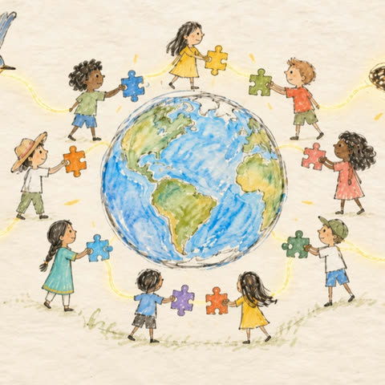

Blog
On people, AI, and the living world we share.

October 22, 2026 · 4 min read · with a one-minute film
Growing up inside one living system, and why I want to build AI that brings people closer together.